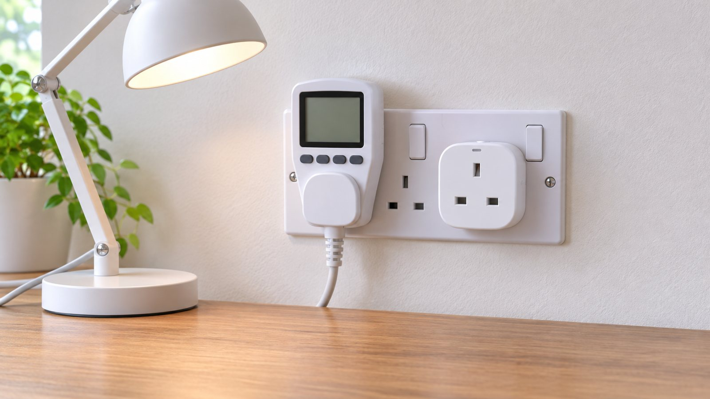
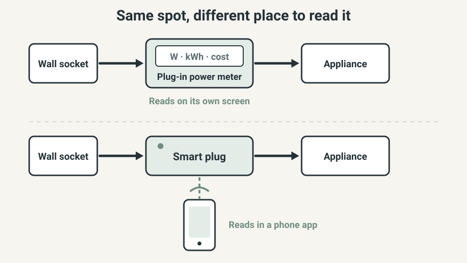
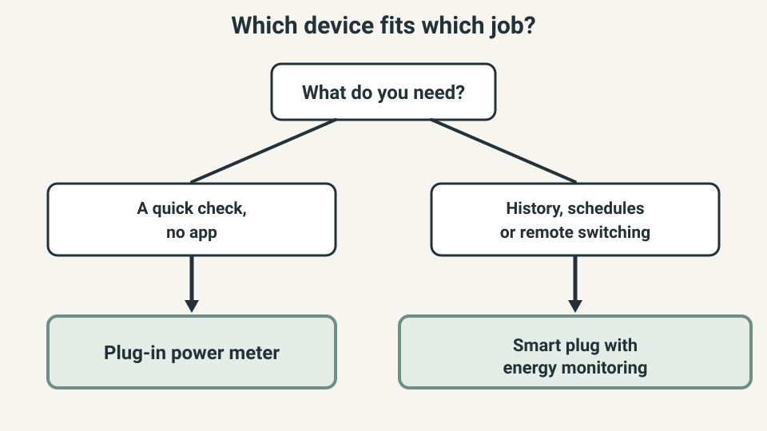
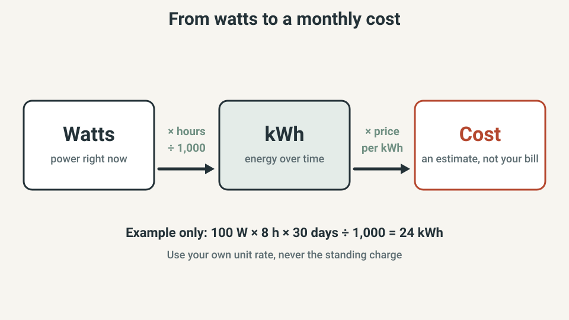

SMART HOME · ENERGY MONITORING
Plug-In Power Meter vs Smart Plug Energy Monitor: Which to Buy?

A plug-in power meter and a smart plug with energy monitoring both show what an appliance costs to run. They work differently. One shows the numbers on its own screen. The other sends them to an app and can switch the appliance too. This guide compares accuracy, the power each device uses itself, app needs and limits. For what is safe to plug in at all, see our smart plug guide. I am not an electrician.
The quick answer
Choose a plug-in power meter for a quick one-off check, and a smart plug with energy monitoring for long-term tracking or automation.
- A meter needs no app. P3 says its Kill A Watt EZ shows eight units of measure and calculates cost and forecasts by week, month and year.
- A smart plug adds history, schedules and remote switching, but only if the exact model lists energy monitoring. Some do not.
- Neither type is more accurate by default. Compare the exact model's specification, and check whether it is a typical or a maximum figure.
- Both use some power themselves. That matters if you leave one in place for months.
- Never go past the rating of the meter, the plug or the socket.
Quick plan
| Item | Detail |
|---|---|
| Time | Setup is quick (my estimate: ten minutes). An appliance that cycles, like a fridge, needs a long measurement |
| Cost | The manufacturer pages I opened give no prices, and prices vary by model and shop |
| Best for | Anyone who wants to know what one appliance costs to run |
| Goal | Pick the right tool and read the result correctly |
Two ways to measure the same appliance
Both devices sit between the wall socket and the appliance. The difference is where you read the result.

Plug-in power meter. P3 describes the Kill A Watt EZ as a meter with a large LCD that counts consumption by the kilowatt-hour. Its manual lists volts, amps, watts, frequency, power factor and VA, plus total kWh and elapsed time. You enter your price per kWh, and it shows the cost so far and a projected cost for an hour, day, week, month or year. If power is interrupted, the manual says accumulated kWh, time and cost are kept, so you can move the unit to read it. It is a US device: 115 V, 15 A maximum, 1875 VA. I did not open a UK meter manual, so I give no UK meter figures here.
Smart plug with energy monitoring. TP-Link's Tapo P110 datasheet describes real-time energy tracking, schedules, timers, remote control through the app and automatic switch-off when power use passes a threshold you set. TP-Link's FAQ says energy data from the P110 and P115 can be exported from the app. For its Kasa plugs, TP-Link says the "Current Power" figure is the instant power of the connected appliance, refreshed every few seconds.
What each one can show
| Reading or feature | Kill A Watt EZ (meter) | Tapo or Kasa (smart plug) |
|---|---|---|
| Watts now | Yes | Yes, in the app |
| Total kWh | Yes, 0.01 to 9999 kWh | Energy tracking in the app; export on P110 and P115 |
| Cost estimate | Yes, from the rate you enter | Check the model; I did not confirm this in the pages I opened |
| Volts, amps, hertz, VA, power factor | Yes | Not listed in the pages I opened |
| Works with no Wi-Fi | Yes, it has its own screen | Local app control works offline per TP-Link; remote control needs internet |
| Switch the appliance on and off | No | Yes |
| Schedules and auto-off | No | Yes |
Power factor, volts and VA matter less to most households than watts and kWh. If you want them, a meter that lists them is the safer buy.
How accurate are the readings?
P3's product page says the Kill A Watt EZ is accurate to within 0.2%. The manual's specification table is more detailed. Voltage is 0.2% typical and 1% maximum, current is 0.3% and 1%, and active power and energy (kWh) are 0.5% typical and 2% maximum. So the 0.2% headline matches the voltage line, not the watts or kWh you care about.
TP-Link says the measurement error of its Kasa energy monitoring plugs is around 3% to 5%, "allowed as it's not a professional power measurement device". That FAQ lists models including the KP115 and HS110. I did not find an accuracy figure for the Tapo P110 in the pages I opened.
On a 100 W appliance, 3% to 5% is 3 to 5 W. These numbers come from the makers, not independent tests, and they use different wording, so I would not rank the two types. For a household estimate, a wrong tariff or a cycling appliance usually moves the answer more than a few percent of meter error. That is my view, not a sourced finding.
The power the monitor uses itself
The Kill A Watt EZ manual gives its own power consumption as 10 W maximum. For the UK Tapo P110, TP-Link lists 1.64 W with the relay on and 0.64 W with the relay off. For its Kasa plugs, TP-Link says the energy reading does not include the plug's own use, which it puts within 2 W.
Those are different products and test conditions, so they are not a head-to-head comparison. They do show why it matters for a device left in place. Arithmetic from the Tapo spec: 1.64 W for 24 hours a day over a year is about 14.4 kWh, which is about $2.87 at an example rate of $0.20 per kWh. Small, but not nothing across many plugs. Our smart lighting guide covers the same standby maths.
Apps, Wi-Fi and accounts
A meter reads on its own screen, so there is nothing to set up beyond your tariff. A smart plug needs its app. TP-Link says Tapo plugs work with any router that supports 2.4 GHz Wi-Fi, can be controlled locally through the app without internet, need a working internet connection for remote control, and need a hub for Smart Actions to run locally.
Other brands differ, and I did not verify account or cloud rules for every maker. Before you buy, check whether setup needs an account, whether energy history works offline, and whether any feature needs a hub. Our Wi-Fi outage test shows how to check what still works when the internet drops.
Ratings and safety limits
- Stay inside the rating. The UK Tapo P110 is listed at 2990 W and 13 A, and the Kill A Watt EZ at 15 A and 1875 VA. TP-Link's datasheet says the total power of connected equipment should not exceed the maximum load current, and that maximum power varies by appliance.
- Overload can fail the relay. TP-Link says a load above the plug's rating can make the relay contacts stick together, so the plug may not be able to cut the power.
- Indoors and dry. The Kill A Watt manual says not to expose it to rain or moisture or use it near water, and TP-Link says Tapo plugs are not suitable for outdoor use.
- Do not overload outlets or extension cords. The Kill A Watt manual says this can cause fire or shock. I would also avoid chaining adapters; that part is my advice.
- Damaged unit? The manual says to unplug it and refer servicing to qualified people if the cord or plug is damaged, liquid has got in, or it behaves oddly.
- Warm plug, scorch marks or a tripping breaker? Stop using it and ask an electrician. That is my rule, not a sourced one.
Which device fits which job

- One appliance, one week: a plug-in meter is the simpler tool.
- Leaving it in place for months: a smart plug gives history and export, but count its own draw.
- Automation or an auto-off limit: only the smart plug can do this. Measuring does not save energy by itself.
- High-heat or high-load appliances: check the watt rules in our smart plug guide before putting anything on a plug.
These matches are my judgment from the features above.
How to measure a fridge or any cycling appliance
- Plug the meter into the socket and the appliance into the meter, then reset it and enter your rate.
- Leave it for a long time. The Kill A Watt manual says cost projections cannot be accurate until the unit has measured full on and off cycles, and that a TV used four hours a day needs the other 20 hours measured too.
- Read kWh and cost at the end, not after a few minutes.
- If you unplug it, the manual says the totals are kept but the elapsed time counter restarts, so read the data straight away.
- With a smart plug, read the same period in its app instead.
Turn watts into a monthly cost

The formula: energy in kWh = watts ÷ 1,000 × hours per day × days. Cost = kWh × your price per kWh.
Example only. An appliance averaging 100 W for 8 hours a day over 30 days uses 100 ÷ 1,000 × 8 × 30 = 24 kWh. At an example price of $0.20 or £0.20 per kWh, that is $4.80 or £4.80 a month. The price is made up for the example, not a typical rate.
Your real price. The Kill A Watt manual says to find the rate on your last utility bill, and that some utilities charge two or more rates by consumption, time of day or season. In the UK, Ofgem says the unit rate (per kWh) and the daily standing charge are separate, and that Economy 7 or multi-rate customers will have more than one unit rate on the bill. Use the unit rate, never the standing charge.
Frequently asked questions
Is a plug-in power meter more accurate than a smart plug?
Not by type. The Kill A Watt EZ manual lists typical 0.5% and maximum 2% for power and energy, and TP-Link says around 3% to 5% for its Kasa energy monitoring plugs. Those come from different manufacturers, wording and products, so compare the exact model's own specification.
Do all smart plugs measure energy?
No. TP-Link says the Tapo P110 and P115 support energy monitoring and the P100 and P105 do not. Check that the exact model lists energy monitoring before you buy.
Does an energy-monitoring smart plug work without internet?
Partly. TP-Link says Tapo plugs can be controlled locally through the app without internet, but Smart Actions need a hub for local use, and remote control needs a working internet connection. Other brands differ, so check the manual.
Does the meter or plug use electricity itself?
Yes. The Kill A Watt EZ manual gives power consumption of 10 W maximum. TP-Link lists 1.64 W with the relay on and 0.64 W with the relay off for the UK Tapo P110, and says the energy reading on its Kasa plugs does not include the plug's own use, which it puts within 2 W.
Can I use either one outdoors?
Not unless the manufacturer rates it for outdoors. The Kill A Watt manual says not to expose it to rain or moisture, and TP-Link says Tapo plugs are not suitable for outdoor use.
Will the cost figure match my bill?
No. It is an estimate from the rate you enter. Ofgem explains that the daily standing charge is separate from the unit rate and is paid even when no energy is used, so it is not part of an appliance's running cost.
Can I plug a power strip into a smart plug?
TP-Link says you can, as long as the total wattage on the strip stays within the smart plug's rated amps and watts. Our smart plug guide covers which loads to keep off a plug entirely.
Keep going
- What can you safely plug into a smart plug?
- Smart bulb or smart switch? How to choose
- A DIY home energy audit walkthrough
- Smart plug or smart power strip: which should you buy?
Sources and further reading
- P3 International, Kill A Watt EZ product page (US): p3international.com Kill A Watt EZ
- P3 International, Kill A Watt EZ operation manual (US): Kill A Watt EZ manual (PDF)
- TP-Link, energy monitoring FAQ, Kasa models (accuracy, own consumption): tp-link.com energy monitoring FAQ
- TP-Link Tapo, P110 UK specifications: tapo.com P110 specifications
- TP-Link Tapo, P110 UK datasheet: Tapo P110 datasheet (PDF)
- TP-Link, Tapo smart plug FAQ (local control, outdoor use, power strips, models): tp-link.com Tapo smart plug FAQ
- TP-Link Tapo, supported load types for UK plugs: tapo.com supported loads FAQ
- Ofgem, price cap and standing charges explained (UK): ofgem.gov.uk standing charges explained
- Ofgem, unit rates and standing charges by region (UK): ofgem.gov.uk rates by region
Last reviewed: November 25, 2026. Accuracy, standby and rating figures are manufacturer claims for specific models, not independent tests, and not a ranking of device types. I did not open a UK plug-in meter manual, so the meter figures are US ones. This is not electrical advice.